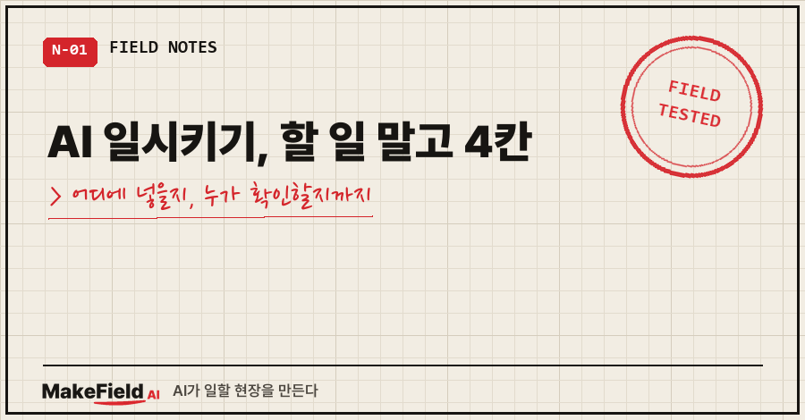
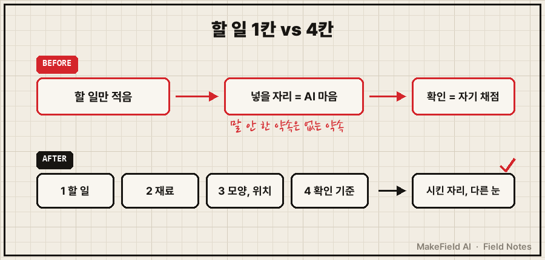
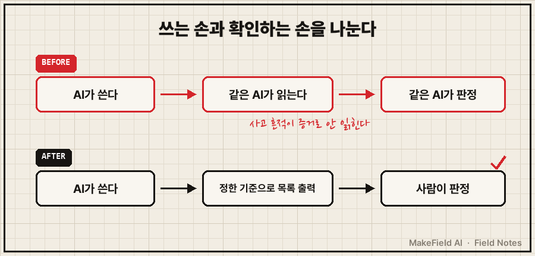

AI 일시키기는 할 일 한 줄로 끝내면 안 됩니다. ①무엇을 ②무슨 재료로 ③어떤 모양으로 어디에 ④누가 어떤 기준으로 확인할지, 이 4칸을 적어야 시킨 대로 돌아와요.
마이크로소프트의 Copilot 공식 안내도 프롬프트를 목표·맥락·출처·기대 4부분으로 나누고, 그중 목표만 필수라고 적어 둡니다(→ https://support.microsoft.com/en-us/topic/learn-about-copilot-prompts-f6c3b467-f07c-4db1-ae54-ffac96184dd5). 필수가 하나뿐이니 다들 목표만 적고 끝내는 거죠.
저도 그랬어요. 그러다 AI가 멀쩡한 기록 12일치를 "사라졌다"고 보고하는 걸 받았습니다.
자동화·제어 일을 15년 해 온 현장 엔지니어고, 개인 일상 루틴 몇 개를 AI한테 매일 새벽 맡겨 두고 있어요. 이 글은 그 루틴에서 배운 'AI한테 일 시키는 법'만 정리합니다.
1. 할 일만 적어서 시키면 이런 화면을 받습니다
작업은 "성공"으로 끝났는데, 결과물을 열면 AI가 스스로 남긴 경고문이 있는 상태예요.
그날 새벽 실행 로그 마지막 줄은 정상이었어요.
[2026-08-15 04:12:14] 종료코드: 0
[2026-08-15 04:12:14] 데일리 브리핑 완료그런데 누적 기록 파일 한가운데엔 이 문장이 박혀 있었습니다.
> ⚠️ [로그 공백] 08-02 항목이 중간에서 끊겨 있고 08-03~08-14 항목이 이 파일에 없음사건 자체는 이전 글(아래 '같은 증상, 다른 경우' 첫 번째 글)에 자세히 적었어요. 짧게만 줄이면, 12일치는 855줄 파일에 다 있었고, AI가 8월 15일치를 파일 끝이 아니라 8월 2일 본문 사이에 끼워 넣은 뒤 그 파일을 자기가 다시 읽고 "누락"으로 판정한 일이었습니다.
이번 글은 원인을 거꾸로 봅니다. 저는 이 일을 어떻게 시켰길래 이렇게 됐나요.
2. 원인: 4칸 중 2칸이 비어 있었어요
'어디에 어떤 순서로'와 '누가 확인하나', 이 두 칸이 어디에도 정해져 있지 않았습니다.
| 칸 | 그때 정해져 있었나 | 비어서 생긴 일 |
|---|---|---|
| ① 할 일 | 있음 — 그날치 정리를 누적 파일에 남긴다 | — |
| ② 재료 | 있음 — 그날 만든 요약 문서 | — |
| ③ 모양·위치 | 없음 — 날짜순으로 쌓인다는 약속이 어디에도 안 적혀 있었음 | 15일치가 2일치 본문 사이에 들어감 |
| ④ 확인 | 없음 — 쓴 AI가 그대로 검사 | 자기 사고를 "자동화 누락"으로 오진 |
넉 달 동안 날짜순으로 쌓여 왔으니 저는 당연한 줄 알았어요. 그런데 말 안 한 약속은 AI 입장에선 없는 약속입니다.
Anthropic 공식 프롬프트 가이드는 AI를 "아주 똑똑하지만 우리 방식은 모르는 신입 직원"처럼 보라고 해요. 그리고 시험 하나를 권합니다. 맥락 없는 동료에게 그 지시를 보여 주고 따라 하게 했을 때 헷갈려하면, AI도 헷갈린다고요(→ https://platform.claude.com/docs/en/build-with-claude/prompt-engineering/claude-prompting-best-practices).
신입한테 "이거 장부에 적어 둬"라고만 하면, 몇 번째 줄에 적을지는 신입 마음이죠..

3. 해결: AI한테 일 시킬 때 적는 4칸
순서가 중요한 일은 번호를 붙여 단계로 적고, 마지막 칸에 '확인 기준'을 문장으로 박습니다. Anthropic 가이드도 순서나 빠짐없음이 중요하면 번호 목록으로 지시하라고 적어 둬요.
아래는 그 사건을 지금 다시 시킨다면 이렇게 적겠다는 재구성 예시입니다(당시 실제 지시문이 아니에요).
1. 할 일: 오늘 날짜 항목 하나를 누적 기록 파일에 추가한다.
2. 재료: 오늘 만든 요약 문서만 쓴다.
3. 모양·위치: 파일 맨 끝에 붙인다. 파일은 날짜 오름차순이다.
기존 항목은 한 글자도 고치지 않는다.
4. 확인: 끝내기 전에 날짜 제목 줄만 전부 뽑아 순서대로인지 보고,
그 목록을 그대로 보고에 붙인다. 판정은 내가 한다.핵심은 4번이에요. "확인해 봐"가 아니라 무엇을 뽑아서 어떤 기준으로 볼지를 정해 줍니다.
Anthropic 가이드도 끝내기 전에 "정해 둔 기준으로 답을 확인하라"고 덧붙이라고 권해요. 다만 제 사건이 보여 준 건, 기준 없이 같은 AI에게 맡긴 확인은 자기 채점이 된다는 점이었습니다. 그래서 저는 기준은 사람이 정하고, 판정도 사람이 한 번 본다로 갑니다.

4. 확인 방법: 결과를 30초 안에 눈으로 보는 명령 한 줄
윈도우라면 PowerShell의 Select-String으로 날짜 제목 줄만 뽑으면 순서가 한눈에 보여요.
Select-String은 정규식으로 파일 안 텍스트를 찾고, 찾은 줄마다 파일 이름·줄 번호·줄 내용을 보여 주는 명령이에요. 유닉스의 grep과 비슷하다고 공식 문서에 적혀 있습니다(→ https://learn.microsoft.com/en-us/powershell/module/microsoft.powershell.utility/select-string).
Select-String -Path .\누적기록.md -Pattern '^### 2026-'줄 번호가 같이 나오니까, 날짜는 커지는데 줄 번호 순서가 뒤집힌 곳이 바로 끼어든 자리예요.
판정 체크리스트는 세 줄이면 충분해요.
- 목록 개수가 기대한 날짜 수와 같은가
- 날짜가 위에서 아래로 커지는가
- 오늘 항목이 맨 마지막 줄인가
5. 같은 증상, 다른 경우
- AI가 "자료가 없다"고 보고했을 때 의심할 3가지 → AI가 자료 없다고 할 때 의심할 3가지
- 확인을 시켰더니 33일 동안 오류 0건이 나왔는데, 알고 보니 자기 답을 자기가 채점하고 있던 경우 → AI 자기 검증 함정
- 일을 시킬 때 결과 칸을 미리 정해 줘서 답의 모양을 고친 경우 → AI 리서치 시키는 법
자주 받는 질문
Q. 4칸을 다 적으면 지시문이 너무 길지 않나요?
매일 도는 일이면 3번(위치·순서)과 4번(확인)은 고정 문구예요. 처음 한 번만 공들이고 다음부턴 그대로 씁니다.
Q. 프롬프트 4요소랑 이 4칸은 같은 건가요?
겹치지만 같진 않아요. 마이크로소프트 안내의 목표·맥락·출처·기대는 '답을 잘 받는 법'이고, 제가 4번 칸에 따로 떼어 둔 '확인 기준·확인자'는 '받은 답을 믿어도 되는지 보는 법'입니다. 매일 무인으로 도는 일엔 이 마지막 칸이 제일 중요했어요.
AI 일시키기에서 빠지기 쉬운 건 할 일이 아니라 위치·순서와 확인이었어요. 제 경우엔 그 두 칸이 비어서, 없어지지도 않은 12일치를 복구할 뻔했습니다.
오늘 AI한테 맡긴 일 중에 "확인은 누가, 무슨 기준으로?"에 바로 답이 안 나오는 게 있으면, 그 지시문 끝에 한 줄만 붙여 보세요.
AI한테 맡긴 일이 어디서 어긋났는지, 지시문을 고쳐 가는 기록은 makefield.ai에 모아 두고 있습니다.
출처
- Microsoft 지원, Learn about Copilot prompts — 프롬프트 4부분(Goal·Context·Source·Expectations), 목표만 필수 → https://support.microsoft.com/en-us/topic/learn-about-copilot-prompts-f6c3b467-f07c-4db1-ae54-ffac96184dd5
- Anthropic, Prompting best practices — Be clear and direct("new employee", 동료 테스트, 순서가 중요하면 번호 목록), Ask Claude to self-check → https://platform.claude.com/docs/en/build-with-claude/prompt-engineering/claude-prompting-best-practices
- Microsoft Learn, Select-String (PowerShell 7.6) — 정규식 검색, 파일 이름·줄 번호·줄 내용 출력, grep과 유사 → https://learn.microsoft.com/en-us/powershell/module/microsoft.powershell.utility/select-string
태그: #AI일시키기 #AI에게일시키기 #AI작업지시 #AI프롬프트작성법 #프롬프트4요소 #AI업무자동화 #AI결과검증 #AI자기검증 #AI오진 #작업지시서 #SelectString #파워셸 #개인AI자동화 #AI로일하기 #MakeFieldAI